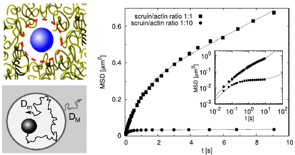

|
<< back
to home page Completed project: 12.2011- 12.2014: National Science Center SONATA grant no. 2011/01/D/ST3/00751 Transition from nano- to macroviscosity in diffusion of nanoparticles in a crowded environment: Theoretical and experimental study of the depletion layer effect 
Gene expression strongly depends on the rate constants
of biochemical reactions, such as e.g. transcription
factor + DNA. A small variation in these rates may
dramatically change the gene expression. Therefore, in
order to design genetic circuits having desired
properties, biotechnologists have to know exactly the
rates of reactions that control gene expression. In
biochemistry, a standard reaction rate analysis is
usually done in vitro, in a buffer of viscosity of
water. However, in vivo, in a crowded environment of
high viscosity, biochemical reactions are usually
limited by diffusion, and their rates may differ by
several orders of magnitude from those expected based
on the standard measurements. Moreover, many
biochemical reactions in living cells are
diffusion-limited. If the diffusion of molecules in a
crowded environment differs from that expected based od
in vitro experiments, then also the rates of
biochemical reactions may be quite different from in
vitro predictions. In this project, we study (both theoretically and experimentally) the transition from the nanoscopic to macroscopic diffusion in a crowded environment. In particular, we study the effect of the less crowded depletion layer around the diffusing nanoparticle. The depletion layer affects the speed of diffusion in different length scales: The motion of the nanoparticle is faster within the less crowded layer and slower on longer distances. We want to experimentally measure the depletion layer thickness, to understand theoretically the dependence of that thickness on the particle size and other factors. Next, we want to understand how the rates of biochemical reactions, especially those involved in gene regulation, are affected by this non-uniform diffusion. The experimental methods we use are: dynamic light scattering (DLS) and fluorescence correlation spectroscopy (FCS). Scientific papers published as the result of the project:
|
|
|